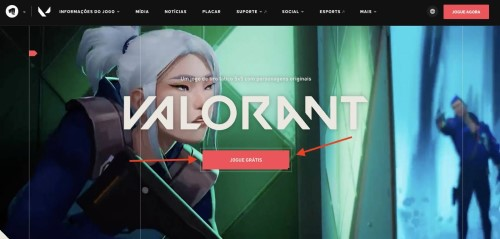
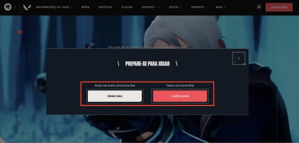
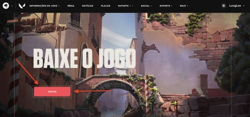
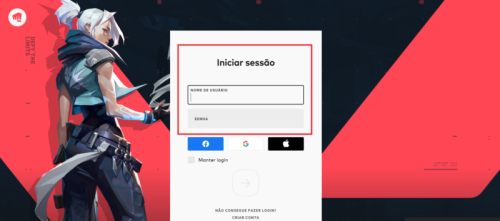
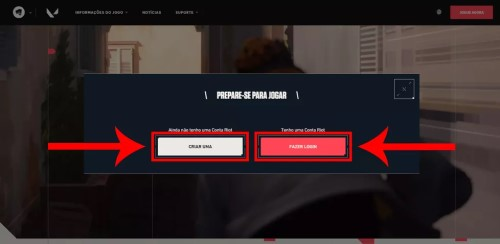

Lançado em 2020, Valorant é um jogo de tiro online e multiplayer no qual dois grupos com cinco jogadores se enfrentam nos diversos mapas de Valorant, inspirados em locais do mundo real. Dependendo do mapa disputado, cada lado da disputa deverá alcançar um objetivo determinado ou impedir o outro lado de conseguir conquistar essa meta.
Configurações do PC para jogar Valorant
Valorant é exclusivo para computadores. Por isso, é importante ficar atento aos requisitos mínimos e recomendados para conseguir rodar o game. Caso contrário, pode acabar perdendo um bom tempo baixando e instalando algo que não vai rodar no seu PC ou notebook. Mas vale mencionar aqui que, com o objetivo de atingir o máximo de jogadores possível, não é necessário ter um PC gamer premium para conseguir aproveitar o jogo.Você verá quais requisitos para rodar Valorant, tanto os mínimos quanto os recomendados. Além destes requisitos de Valorant, vamos oferecer também uma opção de requisitos premium para quem realmente quiser extrair o máximo do game.
Requisitos mínimos
Processador: Intel Core 2 Duo E8400 ou superior
Placa de vídeo: Intel HD 4000 (integrada) ou equivalente com 1GB de VRAM
Memória RAM: 4GB
Quantos GB têm Valorant? Ele exige ao menos 10GB livres para rodar
Requisitos recomendados
Processador: Intel Core i3-4150
Placa de vídeo: GeForce GT 730
Memória RAM: 4GB
Armazenamento disponível: 10GB mínimo
Requisitos premium
Processador: Intel Core i5-4460 ou equivalente com 3,2GHz
Placa de vídeo: GeForce GTX 1050 Ti
Memória RAM: 8GB
Armazenamento disponível: 10GB mínimo
Onde baixar Valorant e como instalar?
Passo 1.
Acesse o site de Valorant e clique em “Jogue grátis”

Passo 2.
Se você já é fã de longa data de League of Legends e tem uma conta Riot, basta clicar em “Fazer login”. Caso seja sua primeira vez em um jogo da empresa, clique em “Criar uma conta Riot”.

Passo 3.
Independentemente da opção que tenha escolhido, preencha o formulário para acessar sua conta no serviço. Você também pode optar por usar sua conta Google, perfil no Facebook ou ID Apple para fazer login.

Passo 4.
Agora, é só clicar no botão “Baixar” para fazer download do cliente do Valorant.

Passo 5
O download do cliente será curto, mas o jogo em si ainda não está baixado. Após o download, abra o cliente do Valorant e faça login novamente.

Passo 6.
Depois, basta esperar o jogo terminar de baixar e você estará pronto para juntar os amigos e encarar as missões de Valorant!